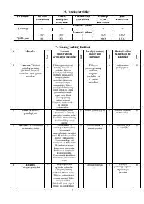

KPKlinik psixologiya fani bo'yicha o'quv dasturi va mavzular rejasi.
Ushbu o'quv dasturi klinik psixologiya fanining asosiy mavzulari, ma'ruza va amaliy mashg'ulotlar rejalari hamda talabalar bilimini baholash mezonlarini o'z ichiga oladi. Matnda tibbiyot psixologiyasi, bemor psixologiyasi, psixosomatika, yatropatogeniyalar va turli somatik kasalliklar psixologiyasiga oid masalalar yoritilgan.